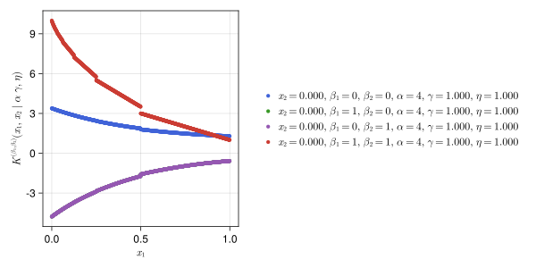
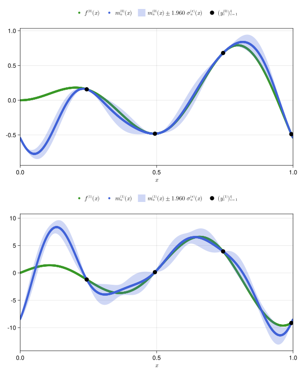
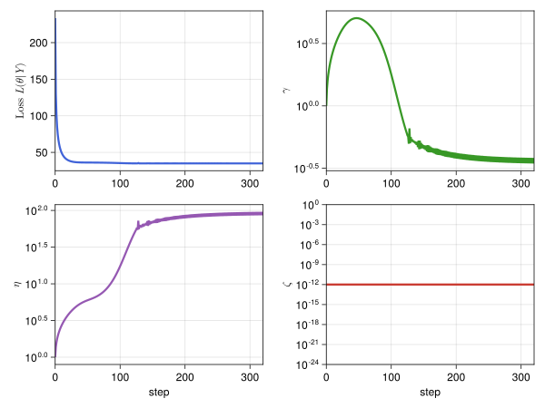
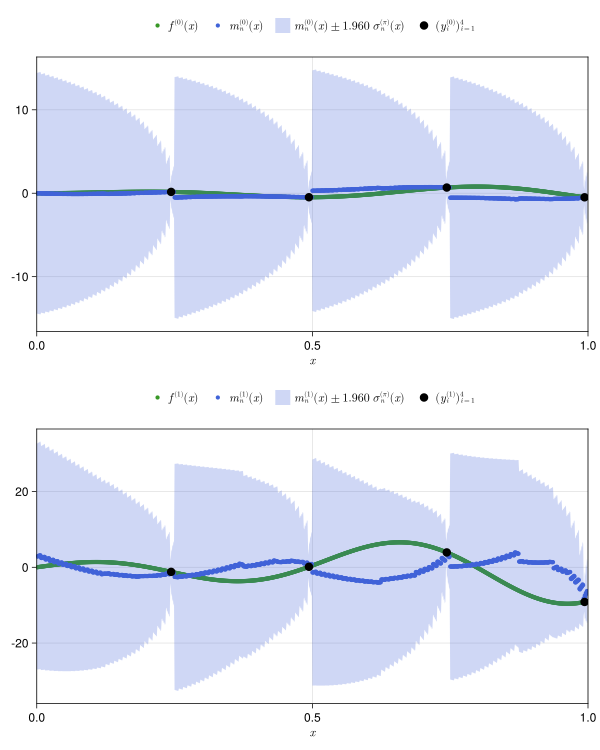
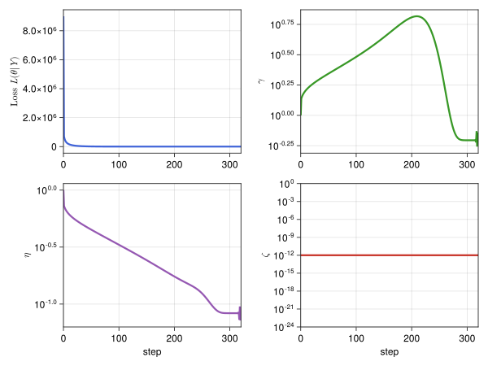
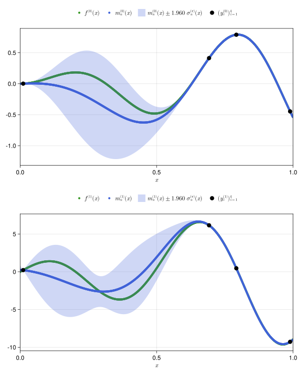
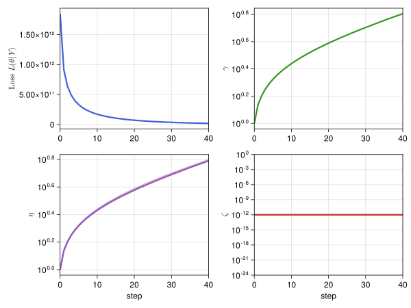
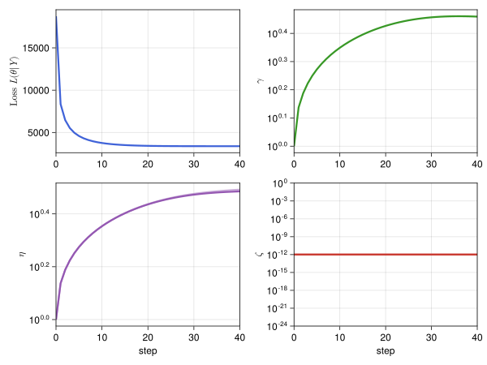
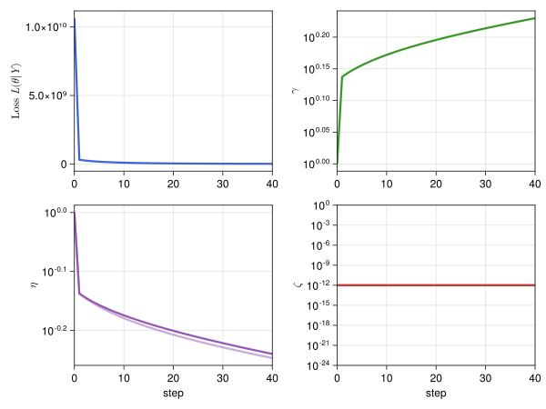

Tutorial
To begin, install this package with
Pkg.add("FastGaussianProcesses")and then import via
using FastGaussianProcessesTo construct specific sampling sequences we also need to be
using QMCGeneratorsKernel 1s Lines
Lattice Kernels
PLOTDIR = joinpath(@__DIR__,"src/assets")
plot_gp_kernel_latticeseqb2_1s_lines(figpath=joinpath(PLOTDIR,"kernels.lines.latticeseqb2.svg"))
Digital Kernels
plot_gp_kernel_digitalseqb2g_1s_lines(figpath=joinpath(PLOTDIR,"kernels.lines.digitalseqb2g.svg"))
RBF Kernels
plot_gp_kernel_rbf_1s_lines(figpath=joinpath(PLOTDIR,"kernels.lines.rbf.svg"))
Kernel 1s Contours and Surfaces
Lattice Kernels
PLOTDIR = joinpath(@__DIR__,"src/assets")
plot_gp_kernel_latticeseqb2_1s_contsurfs(figpath=joinpath(PLOTDIR,"kernels.contsurf.latticeseqb2.svg"))
Digital Kernels
plot_gp_kernel_digitalseqb2g_1s_contsurfs(figpath=joinpath(PLOTDIR,"kernels.contsurf.digitalseqb2g.svg"))
RBF Kernels
plot_gp_kernel_rbf_1s_contsurfs(figpath=joinpath(PLOTDIR,"kernels.contsurf.rbf.svg"))GPs 1s
function f1s(x::Vector{Float64})
[ x[1]*sin(10*x[1]), # f^{(0)}
sin(10*x[1]) + 10*x[1]*cos(10*x[1]) # f^{(1)}
]
endGP Lattice Kernel
gp_1s_latticeseqb2 = FastGaussianProcess(f1s,RandomShift(LatticeSeqB2(1),1,7),2^2;β=[i for i=0:1,j=1:1],verbose=0)
plot_gp_optimization(gp_1s_latticeseqb2,figpath=joinpath(PLOTDIR,"optim.1s.latticeseqb2.svg"))
plot_gp_1s(gp_1s_latticeseqb2;f=f1s,β=[0,1],figpath=joinpath(PLOTDIR,"gp.1s.latticeseqb2.svg"))

GP Digital Kernel
gp_1s_digitalseqb2g = FastGaussianProcess(f1s,RandomDigitalShift(DigitalSeqB2G(1),1,7),2^2;β=[i for i=0:1,j=1:1],verbose=0)
plot_gp_optimization(gp_1s_digitalseqb2g,figpath=joinpath(PLOTDIR,"optim.1s.digitalseqb2g.svg"))
plot_gp_1s(gp_1s_digitalseqb2g;f=f1s,β=[0,1],figpath=joinpath(PLOTDIR,"gp.1s.digitalseqb2g.svg"))

GP RBF Kernel
gp_1s_rbf = GaussianProcessRBF(f1s,IIDU01Seq(1,7),2^2;β=[i for i=0:1,j=1:1],verbose=0)
plot_gp_optimization(gp_1s_rbf,figpath=joinpath(PLOTDIR,"optim.1s.rbf.svg"))
plot_gp_1s(gp_1s_rbf;f=f1s,β=[0,1],figpath=joinpath(PLOTDIR,"gp.1s.rbf.svg"))

GPs 2s
function f2s(x::Vector{Float64})
[ x[1]*sin(10*x[1]) - x[2]*cos(10*x[2]), # f^{(0,0)},
sin(10*x[1]) + 10*x[1]*cos(10*x[1]), # f^{(1,0)}
10*x[2]*sin(10*x[2]) - cos(10*x[2]) # f^{(0,1)}
]
endGP Lattice Kernel
gp_2s_latticeseqb2 = FastGaussianProcess(f2s,RandomShift(LatticeSeqB2(2),1,7),2^8;β=[0 0; 1 0; 0 1],optim_steps=40,verbose=0)
plot_gp_optimization(gp_2s_latticeseqb2,figpath=joinpath(PLOTDIR,"optim.2s.latticeseqb2.svg"))
plot_gp_2s(gp_2s_latticeseqb2;f=f2s,β=[0 0; 1 0; 0 1],figpath=joinpath(PLOTDIR,"gp.2s.latticeseqb2.svg"))

GP Digital Kernel
gp_2s_digitalseqb2g = FastGaussianProcess(f2s,RandomDigitalShift(DigitalSeqB2G(2),1,7),2^8;β=[0 0; 1 0; 0 1],optim_steps=40,verbose=0)
plot_gp_optimization(gp_2s_digitalseqb2g,figpath=joinpath(PLOTDIR,"optim.2s.digitalseqb2g.svg"))
plot_gp_2s(gp_2s_digitalseqb2g;f=f2s,β=[0 0; 1 0; 0 1],figpath=joinpath(PLOTDIR,"gp.2s.digitalseqb2g.svg"))

GP RBF Kernel
gp_2s_rbf = GaussianProcessRBF(f2s,IIDU01Seq(2,7),2^8;β=[0 0; 1 0; 0 1],optim_steps=40,verbose=0)
plot_gp_optimization(gp_2s_rbf,figpath=joinpath(PLOTDIR,"optim.2s.rbf.svg"))
plot_gp_2s(gp_2s_rbf;f=f2s,β=[0 0; 1 0; 0 1],figpath=joinpath(PLOTDIR,"gp.2s.rbf.svg"))